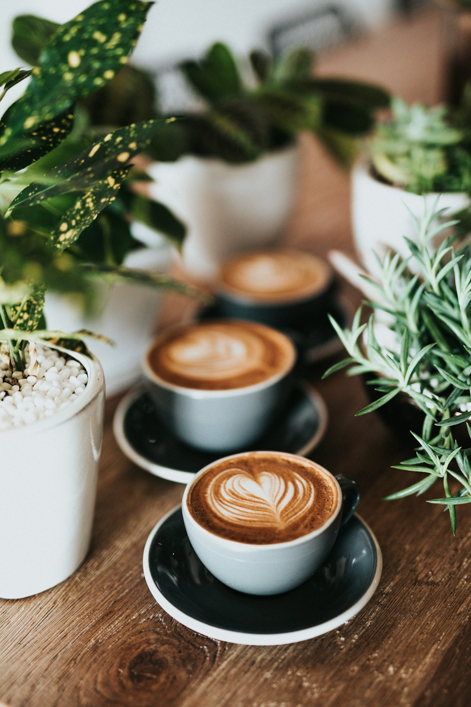
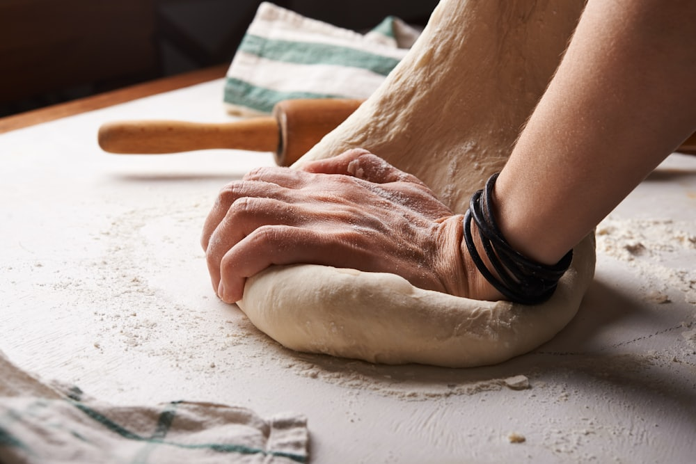
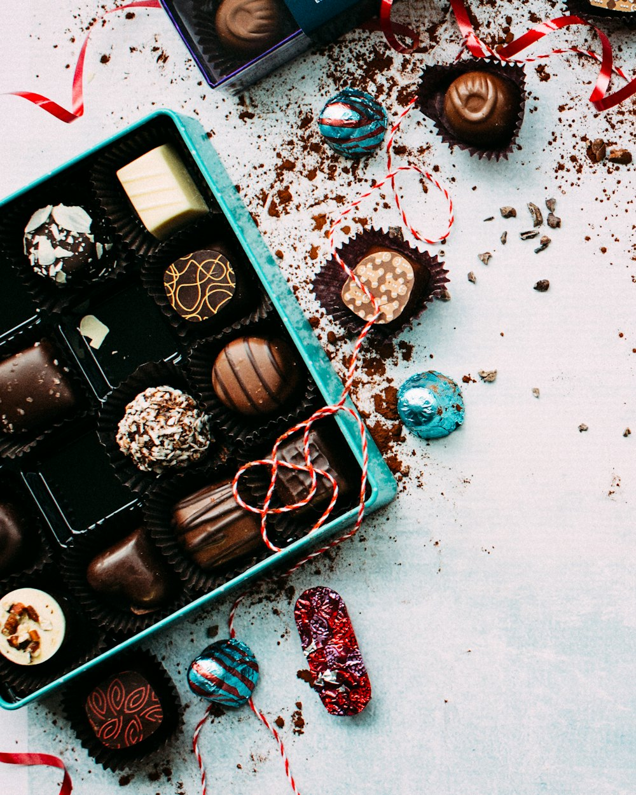

Santiago Centro · Hecho con amor desde temprano
Café, tortas
y un poco de lana.
Repostería y café de especialidad en el corazón de Santiago, con un rincón de tejido propio y horario desde las 6:30 de la mañana.

Quiénes somos
Repostería propia,
hecha con amor.
Café Kanela es una cafetería y pastelería en pleno Santiago Centro, con más de 700 reseñas en Google y una reputación construida a pulso: café de grano, tortas y kuchen horneados en casa, y opciones veganas y sin gluten para que nadie se quede sin probar algo rico.
Abren desde muy temprano entre semana — ideal para el desayuno antes del trabajo — y los fines de semana se toman con calma, con horario más corto.


Un detalle poco común
El espacio lanero.
Además de café y pastelería, Kanela tiene su propio "Emporio" de chocolates y un rincón dedicado al tejido — un "espacio lanero" que lo distingue de cualquier otra cafetería del barrio. Un lugar para quedarse un rato, no solo para el café rápido.
* Fotos de esta sección son referenciales (de stock), a la espera de fotos reales del local.
La carta
Dulce y con calma.
Lo que dicen
4.7
706 opiniones en Google Maps
"Me encanta!! Rico sabor! Excelente atención!! Sus desayunos son una maravilla."
"Buen café en grano! Rico ambiente, grata atención y tienen una amplia variedad. He venido un par de veces y creo que es el mejor café del barrio. Atienden desde tempranito y hay varios lugares para estacionar cerca."
Visítanos
Blanco Encalada 1723.
Av. Almte. Blanco Encalada 1723, Local 1
Santiago, Región Metropolitana
Lunes a viernes 6:30–20:00
Sábado y domingo 8:00–14:00
* Horario según Instagram y resumen de Google — Maps muestra un cierre más temprano entre semana; confirmar con el local.